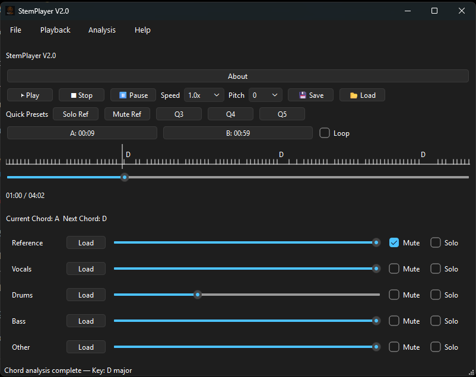

StemPlayer helps you practice. It doesn't teach you.
Windows practice tool for musicians
Practice the song your way.
Turn separated stems into a practice session you can slow down, loop, remix, transpose, save, and continue tomorrow.
Windows desktop app · One-time purchase · No subscription

Demo
See StemPlayer in action.
Open → Adjust → Loop → Practice → Save → Continue
Why StemPlayer?
Turn a song into your practice session.
Sometimes you don't need another lesson. You need to hear less guitar. Remove the vocals. Solo the bass. Slow down a difficult passage. Loop it until you get it right. Change the key. Then come back tomorrow and continue where you left off.
How it works
A simple practice workflow.
Built for the part after stem separation and before performance or recording.
01
Open your song
Load separated stems and keep the original full mix as your Reference track.
02
Build your practice mix
Adjust volume, Mute, or Solo individual parts.
03
Work on hard sections
Slow the song down and use A/B Loop to repeat exactly what you need.
04
Practice in another key
Shift the song from −4 to +4 semitones.
05
Get chord guidance
Follow Current Chord, Next Chord, and the Chord Timeline.
06
Save and continue
Save a Preset or full Practice Session and pick up later.
V2 features
Everything you need for focused practice.
Stem Mixer
Reference · Vocals · Drums · Bass · Other
Practice Controls
Volume · Mute · Solo · Playback Speed · A/B Loop
Quick Presets
Switch quickly between useful practice mixes with Q1–Q5.
Pitch Shift
Practice from −4 to +4 semitones.
Chord Analysis
Current Chord · Next Chord · Chord Timeline
Practice Sessions
Save your setup and continue your practice later.
From practice to performance
StemPlayer fits in the middle.
Separate
Moises / UVR / Demucs
Moises / UVR / Demucs
→
Practice & prepare
StemPlayer
StemPlayer
→
Perform / Record
Your instrument / DAW
Your instrument / DAW
→
Release
Distribution / streaming
Distribution / streaming
StemPlayer doesn't replace stem separation, a DAW, or a music teacher. It fills the focused practice step in between.
Choose your version
Start free. Upgrade when you need more.
| Feature | V1 — Free | V2 — $5 one-time |
|---|---|---|
| Stem mixer | ✓ | ✓ |
| Volume / Mute / Solo | ✓ | ✓ |
| A/B Loop | ✓ | ✓ |
| Playback Speed | ✓ | ✓ |
| Presets | ✓ | ✓ |
| Quick Presets Q1–Q5 | — | ✓ |
| Practice Sessions | — | ✓ |
| Pitch Shift ±4 | — | ✓ |
| Chord Analysis | — | ✓ |
| Chord Timeline | — | ✓ |
| Subscription | No | No |
Community
Built around real practice.
Feedback is open from day one. Public testimonials and download counts will only appear when there is enough real, verified data.
Testimonials + public counters are intentionally hidden for launch.
We won't invent social proof.
We won't invent social proof.
FAQ
Good to know.
Does StemPlayer separate songs into stems?
No. StemPlayer works with stems you have already separated. The recommended V2 workflow is a 4-stem setup such as htdemucs plus the original full mix as the Reference track.
Is StemPlayer a DAW?
No. StemPlayer is a focused music practice tool.
Does StemPlayer teach guitar, bass, drums, or vocals?
No. StemPlayer helps you practice. It doesn't teach you.
Is V2 a subscription?
No. StemPlayer V2 is $5 one-time.
What operating system does it support?
StemPlayer V2 currently supports Windows.
What happens after I buy V2?
Your payment is verified before you receive V2 installer/download instructions and your individual StemPlayer V2 license.
Can I share Presets and Practice Sessions?
Yes. Preset and Session files are designed to be portable. Each V2 user still needs their own valid product license.
StemPlayer V2
Your song. Your instrument. Your practice session.
Practice the song your way.
Windows · One-time purchase · No subscription